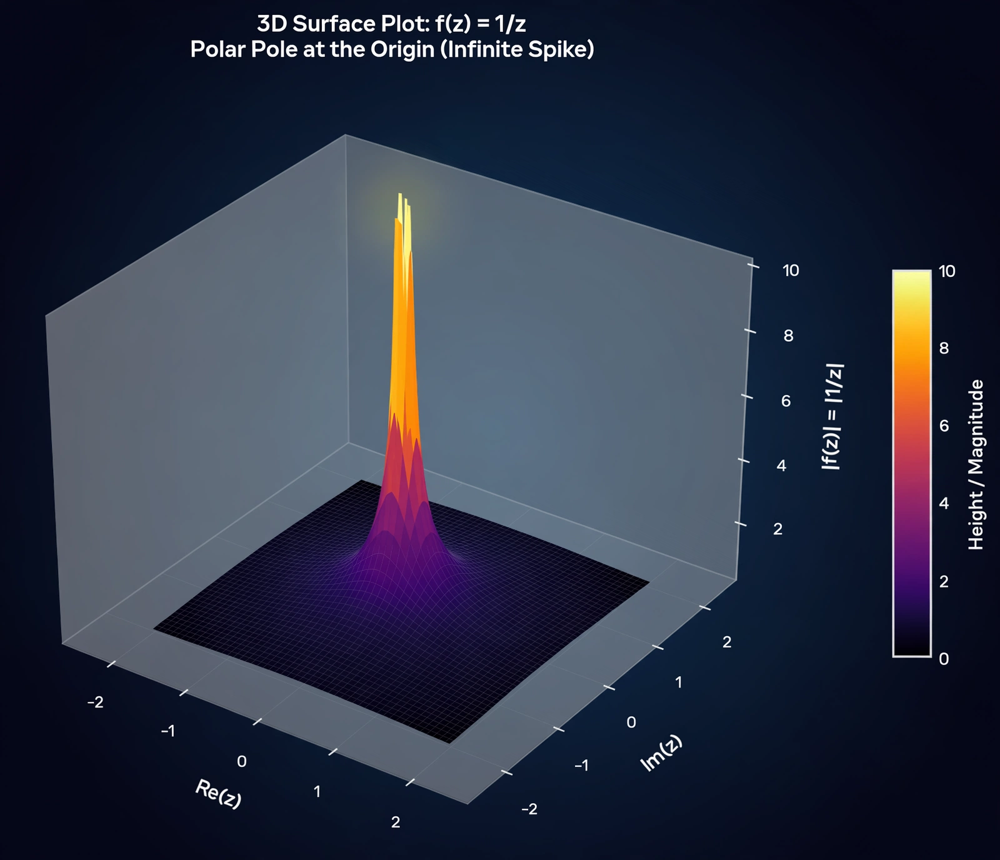

| Field | Complex analysis |
| Type | Isolated singularity |
| Behaviour | |f(z)| → ∞ as z → pole |
| Related | Removable singularity, essential singularity, residue |

In complex analysis, a pole is a type of isolated singularity of a complex-valued function at which the function's values grow without bound. A point z₀ is a pole of f if f is holomorphic in a punctured neighbourhood of z₀ and |f(z)| → ∞ as z → z₀. Poles are the "tame" infinities of complex analysis: unlike an essential singularity, where the function's behaviour is chaotic (Casorati–Weierstrass theorem), a pole has an exact integer order.
Equivalently, z₀ is a pole of f if 1/f has a zero at z₀ (after defining 1/f(z₀) = 0). The order (or multiplicity) of the pole is the order of that zero: the smallest positive integer n such that
(z − z₀)ⁿ f(z)
has a finite, non-zero limit at z₀. A pole of order 1 is a simple pole; order 2 is a double pole, and so on. In the Laurent series expansion of f around z₀, the order is the degree of the highest negative-power term.
The function f(z) = 1/z has a simple pole at 0. f(z) = 1/(1 − z)² has a double pole at z = 1. The gamma function has simple poles at 0, −1, −2, …; the Riemann zeta function has a single simple pole at z = 1 with residue 1. A rational function has poles exactly at the zeros of its denominator (counted appropriately).
Near a pole, the coefficient of (z − z₀)⁻¹ in the Laurent series is the residue, which determines the value of contour integrals around the pole via the residue theorem — one of the most powerful computational tools in analysis and physics. In control theory and signal processing, the poles of a transfer function in the complex plane determine the stability of a system.